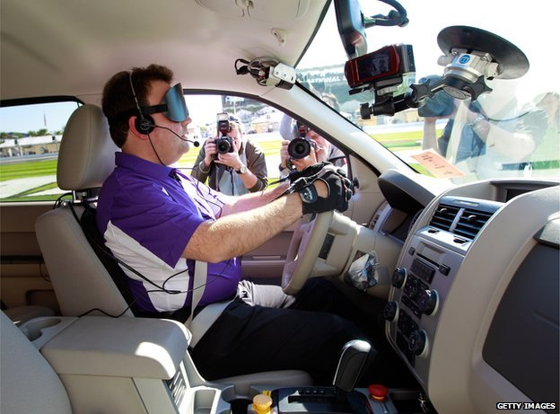

No steering wheel, no break pedals, no driver...
Magda Ang
June 10th, 2014
Is the Future here?
How did you pictured the future when you were a child? I remember everybody saying cars would fly...if you didn't see "Back to the future", you are really young, hahaha. Of course I imagined flying cars with people IN them... The whole idea of watching a car without a driver next to me makes me a little nervous: is it safe? Will it stop if a kid runs suddenly across the street? On the other hand, if it works as Google people say, people with disability could have the liberty to go where they want to go. Cars and car ownership are important parts of a sense of independence and personal power.
The company has begun building a fleet of 100 experimental electric-powered vehicles that will dispense with all the standard controls found in modern automobiles. The two-seat vehicle looks a bit like the ultracompact Fiat 500 or the Mercedes-Benz Smart car if you take out the steering wheel, gas pedal, brake and gear shift. The only things the driver controls is a red “e-stop” button for panic stops and a separate start button. The vehicles will have electronic sensors that can see about 600 feet in all directions. They will have rearview mirrors because they are required by California’s vehicle code. The front of the car will be made from a foamlike material in case the computer fails and it hits a pedestrian (whaaat?). Google’s prototype for its new cars will limit them to a top speed of 25 miles per hour. The cars are intended for driving in urban and suburban settings, not on highways. The car would be summoned with a smartphone application. It would pick up a passenger and automatically drive to a destination selected on a smartphone app without any human intervention.

"As exciting as the promise of safely texting while driving may be, hurdles remain high", says Susan Shaheen, co-director of the Transportation Sustainability Research Center at the University of California-Berkeley. "Among the big questions are, who is responsible if there's an accident?" Other big issues include the high cost of the technology, its sensitivity to hackers who might reprogram a car's route, and serious weather. Laws permit autonomous vehicles in California, Nevada and Florida. But those laws have generally been written with the expectation that a human driver would be able to take control in emergencies.
My opinion
The idea has a lot of potential and Google has accomplished so many things so far that I'm sure they are going to succeed at this too. Once they can prove the cars are safe, it will be easier for everyone to accept them. There is need of more laws and regulations on this matter, so everybody can be safe. In order to help people with disabilities, there is a lot to do. There will still be a difficulty getting out of the car and finding their way to a front door of where they're headed. Even though Google's driverless cars are here, they are prototypes. It will take a long time to actually see them working as regular cars in countries like USA or others in Europe, while in countries in development like Mexico, maybe not in my lifetime.
Sources
http://www.usatoday.com/story/tech/2014/05/13/google-self-driving-car-demo-mountain-view/9046385/ http://www.nytimes.com/2014/05/28/technology/googles-next-phase-in-driverless-cars-no-brakes-or-steering-wheel.html http://www.bbc.com/news/blogs-ouch-24926652